library("tidyverse")
library("here")14_analysis_10
All document
Huskeliste (slet mig!)
Rækkefølge af facet_wrap() plots
Overskrifter i figur_5 plots filerne
Output fra alle filer I results (html, png)
Continuous variable
Function
Loading relevant libraries
Loading relevant data
raw_data <- read_csv(file = "https://datashare.ed.ac.uk/bitstream/handle/10283/124/IST_corrected.csv?sequence=5&isAllowed=y")Saving data in a tsv format
# Define the file path
file_path <- "../data/_raw/"
if (!file.exists(file_path)){dir.create(file_path, recursive = TRUE)}
#Create the directory if it doesn't exist
if (!file.exists(file_path)) { dir.create(file_path, recursive = TRUE) }
#Write the data to a TSV file
write_tsv(x = raw_data,
file = str_c(file_path, "01_dat_load.tsv"))Data Cleaning
Loading libraries
library("tidyverse")Loading data
data <- read_tsv("../data/_raw/01_dat_load.tsv")Data cleaning
Ensuring global use of Yes/No for binary variables, and NA if information is unknown (U/u/0)
During revision of the data, many faulty characters of U and C appear within columns, only meant for Y or N. The U and C are therefore changed to NA to indicate a missing value.
#converting U and C to NA
data_clean_properNA <- data |>
#Replacing all C with NA to indicate missing value
mutate(across(where(is.character), ~ na_if(.,"C"))) |>
#Replace all U and u with NA in all columns except for RCONSC, where U = unconscious
mutate(RCONSC = if_else(RCONSC == "U", "unconscious", RCONSC)) |>
mutate(across(where(is.character), ~na_if(.,"U")),
across(where(is.character), ~na_if(.,"u"))) |>
mutate(RCONSC = if_else(RCONSC == "unconscious", "U", RCONSC))In the variable SET14D, a 0 is indicating that it is not known if the subject is alive or dead at the 14 day checkup. We therefore want to change the 0 to NA, indicating that this information is not known.
#converting 0 to NA
data_clean_properNA2 <- data_clean_properNA |>
mutate(SET14D = if_else(SET14D == 0, NA, SET14D))In column DASP14 and FAP, both n and N along with y and Y both indicating No and Yes respectively. To match the general synthax, all letters are made upper case
#making y and n upper case
data_clean_propervar <- data_clean_properNA2 |>
mutate(across(c(DASP14,FAP), ~str_to_upper(.)))In the columns DVT14, H14,DDEAD, HTI14, ID14, ISC14, NCB14, NK14, PE14, TRAN14, values are 0 = no and 1 = yes, and to match the other binary variables they will therefore be transformed to N = no and Y = yes.
#converting 0 to N(No) and 1 to Y(yes)
data_clean_propervar2 <- data_clean_propervar |>
mutate(across(c(DVT14,H14,DDEAD,HTI14,ID14,ISC14,NCB14,NK14,PE14,TRAN14,STRK14),
~case_when(
. == 0 ~ "N",
. == 1 ~ "Y")))Ensuring global syntax for numbers 1-8 naming cause of death
The numbers 1-8 is used for naming cause of death. Therefore OCCODE is renamed to the actual meanings of the numbers 0-9 to prevent confusion to number code in cause of death.
#changing values 0-9 for occode to their actual meaning
data_clean_properOCcode <- data_clean_propervar2 |>
mutate(OCCODE = case_when(
OCCODE %in% c(0,8,9) ~ NA,
OCCODE == 1 ~ "dead",
OCCODE == 2 ~ "dependent",
OCCODE == 3 ~ "not recovered",
OCCODE == 4 ~ "recovered"))Converting all time-values exceeding 59 min and 23 hours to NA
In the two columns minlocal and hourlocal the local time of the randomization study initiation is annotated. This value is not allowed to be higher than 59 min and 23 hours. All values above this is set to NA for missing values.
#replacing all values above 59 in minute and 23 hour with NA
data_clean_truetime <- data_clean_properOCcode |>
mutate(MINLOCAL = if_else(MINLOCAL > 59, NA, MINLOCAL),
HOURLOCAL = if_else(HOURLOCAL > 23, NA, HOURLOCAL))Fixing errors made in the gathering of the data
For the pilot study, medium dose of heparin is annotated as high dose. The high dose annotation is changed to medium dose annotation, and the two columns for medium dose of pilot study and following study is merged.
#replacing all H for M for indicating medium dose (Heparin)
data_clean_noH <- data_clean_truetime |>
mutate(RXHEP = if_else(RXHEP == "H","M",RXHEP))
#merging the Hep high and hep medium column, changing unknown to NA
data_clean_correctHepDose <- data_clean_noH |>
mutate(across(c(DMH14,DHH14), ~replace_na(.,""))) |>
unite(DMH14, c(DMH14,DHH14), sep = "") |>
mutate(DMH14 = na_if(DMH14,"")) |>
mutate(across(c(DMH14,DLH14), ~na_if(., "U")))The variable STRK14 is annotated as STR14 in the data description, and the column is therefore renamed accordingly
#converting name of variable STRK14 to align with the variable description
data_clean_annotationalign <- data_clean_correctHepDose |>
rename("STR14" = STRK14)In the RDATE variable, all times are annotated as polish months and year. We aim to convert this information in two columns, and reencode the polish to english months
#converting polish month names to english month names
data_clean_english <- data_clean_annotationalign |>
separate_wider_delim(RDATE,delim = "-", names = c("RMONTH","RYEAR")) |>
mutate(RMONTH = case_when(
RMONTH == "sty" ~ "Jan",
RMONTH == "lut" ~ "Feb",
RMONTH == "mar" ~ "Mar",
RMONTH == "kwi" ~ "Apr",
RMONTH == "maj" ~ "May",
RMONTH == "cze" ~ "Jun",
RMONTH == "lip" ~ "Jul",
RMONTH == "sie" ~ "Aug",
RMONTH == "wrz" ~ "Sep",
RMONTH == "pa\x9f" ~ "Oct",
RMONTH == "lis" ~ "Nov",
RMONTH == "gru" ~ "Dec"))Removal of irrelevant columns
Some columns is already known to not be relevant. These will therefore be removed to reduce the space of the column.
#removing of irrelevant columns
data_clean_removecol <- data_clean_english |>
#Removing comment columns
select(-c(DMAJNCHX,DNOSTRKX,DSIDEX,DDEADX,FDEADX)) |>
#Removing columns which are not interesting for our studies
select(-c(HOSPNUM,CNTRYNUM,SET14D,NCCODE)) |>
#Removing column which have unknown meaning as not included in variable descriptions
select(-c(DIED))Merging of columns
The columns DDEADD and FDEADD are the same, as the value is the date of death of the subject, which is independent of when the checkup is done. The columns are therefore renamed to DEADD (deathdate) and one of the columns are removed.
#removing ambigious columns
data_clean_mergecol <- data_clean_removecol |>
rename("DEADD" = DDEADD) |>
select(-FDEADD)There are four different columns in the data which all represents the final diagnosis of the initial event. It is fair to assume that if one final diagnosis is made of an initial event then another diagnosis is not made, as there are no data entries which has “Y” in more than one of the diagnosis. One column, DDIAG, is therefore made to represent the final diagnosis of the initial event.
#mergin 4 columns into a new (DDIAG)
data_clean_mergecol2 <- data_clean_mergecol |>
mutate("DDIAG" = case_when(
DDIAGISC == "Y" ~ "DDIAGISC",
DDIAGHA == "Y" ~ "DDIAGHA",
DDIAGUN == "Y" ~ "DDIAGUN",
DNOSTRK == "Y" ~ "DNOSTRK",
TRUE ~ NA))The causes of death at 6 months are split into 8 different columns called DEAD1-8. To have more tidy data, all columns are merged together into one column, using the same 1-8 code for cause of death as DDEADC and FDEADC columns. The new column is called DEADC (death cause)
#creating of one column DEADC, which contains all causes of death as 1-8
data_clean_properDEADcode <- data_clean_mergecol2 |>
mutate(DEAD1 = if_else(DEAD1 == 1, "1", ""),
DEAD2 = if_else(DEAD2 == 1, "2", ""),
DEAD3 = if_else(DEAD3 == 1, "3", ""),
DEAD4 = if_else(DEAD4 == 1, "4", ""),
DEAD5 = if_else(DEAD5 == 1, "5", ""),
DEAD6 = if_else(DEAD6 == 1, "6", ""),
DEAD7 = if_else(DEAD7 == 1, "7", ""),
DEAD8 = if_else(DEAD8 == 1, "8", "")) |>
unite(DEADC, c(DEAD1,DEAD2,DEAD3,DEAD4,DEAD5,DEAD6,DEAD7,DEAD8), sep = "") |>
mutate(DEADC = na_if(DEADC,""))Splitting/joining data
Adding unique identifier (number) to each patient is done for the purpose of having a key to join the data after splitting. Creating a variable is normally thought of as data augmentation, but it is done in the cleaning for this purpose.
In order to be able to distinguish patients participating in the trial a Unique Subject Identifier USUBJID is added a variable number one in the cleaned dataset.
#adding a unique identifier (number) to each patient
data_clean_numbered<- data_clean_properDEADcode |>
mutate(USUBJID = row_number()) |>
select(USUBJID, everything())It might be relevant to split data into multiple datasets. This is the case if we want to share some data with stakeholders while some variables contain information that is sensitive and need to remove from the dataset (e.g. GDPR reasons).
#splitting of dataset into 2
data_split_1 <- data_clean_numbered |>
select(1:50)
data_split_2 <- data_clean_numbered |>
select(1, 51:96)#joining dataset by the key which we have created
data_inner_joined <- data_split_1 |>
inner_join(data_split_2, by = join_by(USUBJID))Another scenario might be that while the external stakeholder is working with their part of the dataset data_split_2, patients might have withdrawn from the study and rows have been removed in data_split_1. If we want to remove the same patients/observations during the join, left_join() will be used.
#removing observations
data_split_1_1 <- data_split_1 |>
slice(-sample(n(), 500))#combining two datasets, where one has missing observations
data_left_joined <- data_split_1_1 |>
left_join(data_split_2, by = join_by(USUBJID))Saving final clean data
write_tsv(data_inner_joined, file = "../data/02_dat_clean.tsv")Data Augmentation
Loading libraries
library("tidyverse")Loading clean data
data_clean <- read_tsv(file = "../data/02_dat_clean.tsv")Rows: 19435 Columns: 96
── Column specification ────────────────────────────────────────────────────────
Delimiter: "\t"
chr (67): RCONSC, SEX, RSLEEP, RATRIAL, RCT, RVISINF, RHEP24, RASP3, RDEF1, ...
dbl (28): USUBJID, RDELAY, AGE, RSBP, RYEAR, HOURLOCAL, MINLOCAL, DAYLOCAL, ...
lgl (1): DDEAD
ℹ Use `spec()` to retrieve the full column specification for this data.
ℹ Specify the column types or set `show_col_types = FALSE` to quiet this message.Data augmentation
DLH14 describes if the subject had a low dose of heparin (Yes/No), DMH14 describes if the subject had a medium dose of heparin (Yes/No), given for 14 days or till death/discharge. We want to merge the two columns into one to improve tidyness, Introduce L for low, M for medium, C for control (no Heparin) and NA for no known information or conflicting information in the two columns.
#creating groups for heparin doses
data_clean_hepgroups <- data_clean |>
mutate("DH14" = case_when(
(is.na(DLH14) & is.na(DMH14)) ~ NA,
(DLH14 == "Y" & DMH14 == "Y") ~ NA,
(DLH14 == "N" & DMH14 == "N") ~ "C",
(DLH14 == "Y" & DMH14 == "N") ~ "L",
(DLH14 == "N" & DMH14 == "Y") ~ "M"))There are 6 different groups in the data. We therefore want to make a group name column to get an easy overview of the groups in the data
#creating groups based on treatment
data_clean_trtgroups <- data_clean_hepgroups |>
mutate("data_group" = case_when(
(RXASP == "Y" & RXHEP == "L") ~ "Asp-Hep(low)",
(RXASP == "Y" & RXHEP == "M") ~ "Asp-Hep(med)",
(RXASP == "Y" & RXHEP == "N") ~ "Asp-Hep(No)",
(RXASP == "N" & RXHEP == "L") ~ "Asp(No)-Hep(low)",
(RXASP == "N" & RXHEP == "M") ~ "Asp(No)-Hep(med)",
(RXASP == "N" & RXHEP == "N") ~ "Asp(No)-Hep(No)"
))Saving augmented data
write_tsv(data_clean_trtgroups, file = "../data/03_dat_aug.tsv")Descriptive analysis
Loading libraries
library("tidyverse")
library("ggplot2")
library("dplyr")
library("readr")Import the dataset
# Load the dataset
dataset <- read_tsv("../data/03_dat_aug.tsv")Rows: 19435 Columns: 98
── Column specification ────────────────────────────────────────────────────────
Delimiter: "\t"
chr (69): RCONSC, SEX, RSLEEP, RATRIAL, RCT, RVISINF, RHEP24, RASP3, RDEF1, ...
dbl (28): USUBJID, RDELAY, AGE, RSBP, RYEAR, HOURLOCAL, MINLOCAL, DAYLOCAL, ...
lgl (1): DDEAD
ℹ Use `spec()` to retrieve the full column specification for this data.
ℹ Specify the column types or set `show_col_types = FALSE` to quiet this message.Age distribution of study population
# Calculate the mean of AGE
mean_age <- mean(data$AGE, na.rm = TRUE) # Visualizing age distribution of study population
p1<- ggplot(dataset, aes(x = AGE)) +
geom_histogram(fill = "lightblue",
color = "darkblue",
bins = 30,
alpha=0.7) +
labs(title = "Age Distribution of the Study Population",
x = "Age (years)",
y = "Number of People") +
theme_minimal(base_size = 14) + # Clean minimal theme with larger text
theme(plot.title = element_text(hjust = 0.5, face = "bold", size = 18),
axis.title.x = element_text(face = "bold", size = 14), # Bold x-axis title
axis.title.y = element_text(face = "bold", size = 14), # Bold y-axis title
panel.grid.minor = element_blank() # Removes minor grid lines
) +
scale_x_continuous(breaks = seq(0, 100, by = 10),
limits = c(0, 100) ) + # Set x-axis limits and breaks
scale_y_continuous(expand = expansion(mult = c(0, 0.05)),
breaks = seq(0, 3000, by = 500),) + # Avoids crowded y-axis and setting breaks
# Adding a short dashed line for the mean age
geom_segment(aes(x = mean_age,
xend = mean_age,
y = 0,
yend = 2900),
color = "darkgreen",
linetype = "dashed",
size = 1.0 ) + # Adds mean age as a vertical dashed line
annotate( "label",
x = mean(dataset$AGE, na.rm = TRUE) + 12, # Moving label 12 units right of mean to prevent overlap
y = max(table(dataset$AGE)) * 0.8, # Position slightly below the peak
label = paste("Mean Age:",
round(mean(data$AGE, na.rm = TRUE), 1),"years"),
color = "white",
fill="darkgreen",
fontface="bold",
size=5,
label.padding=unit(0.4,"lines")) # Mean age shown in a text box with paddingWarning: Using `size` aesthetic for lines was deprecated in ggplot2 3.4.0.
ℹ Please use `linewidth` instead.p1Warning in geom_segment(aes(x = mean_age, xend = mean_age, y = 0, yend = 2900), : All aesthetics have length 1, but the data has 19435 rows.
ℹ Please consider using `annotate()` or provide this layer with data containing
a single row.Warning: Removed 2 rows containing missing values or values outside the scale range
(`geom_bar()`).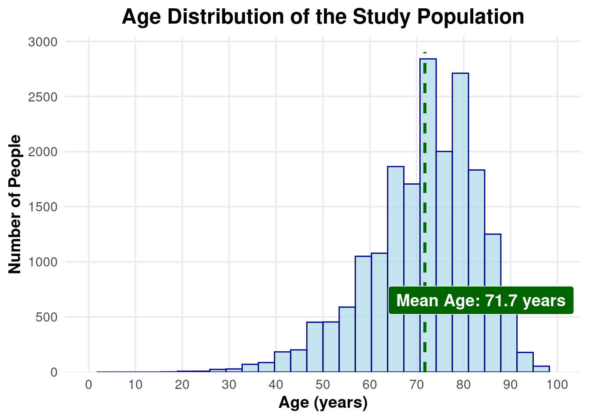
#saving the plot as a png
ggsave("../results/03_decription_plot_1.png", plot = p1, width = 8, height = 4, dpi = 300, bg = "white")Warning in geom_segment(aes(x = mean_age, xend = mean_age, y = 0, yend = 2900), : All aesthetics have length 1, but the data has 19435 rows.
ℹ Please consider using `annotate()` or provide this layer with data containing
a single row.
Removed 2 rows containing missing values or values outside the scale range
(`geom_bar()`).Age distribution of stroke subtypes (STYPE)
Show stroke subtype STYPE distributed by age using histogram:
Describe the different subtypes of strokes
Get x-values on all the types…
# Faceted histogram by STYPE
ggplot(dataset, aes(x = AGE, fill = STYPE)) +
geom_histogram(binwidth = 5, color = "black", alpha = 0.7) +
scale_x_continuous(breaks = seq(0, 100, by = 25), limits = c(0, 100)) +
labs(
title = "Age distribution of stroke subtypes (STYPE)",
x = "Age (years)",
y = "Frequency",
fill = "STYPE"
) +
theme_minimal(base_size = 14) +
theme(
plot.title = element_text(hjust = 0.5, face = "bold", size = 18),
axis.title.x = element_text(face = "bold", size = 14),
axis.title.y = element_text(face = "bold", size = 14)
) +
facet_wrap(~ STYPE, scales = "free_y")Warning: Removed 10 rows containing missing values or values outside the scale range
(`geom_bar()`).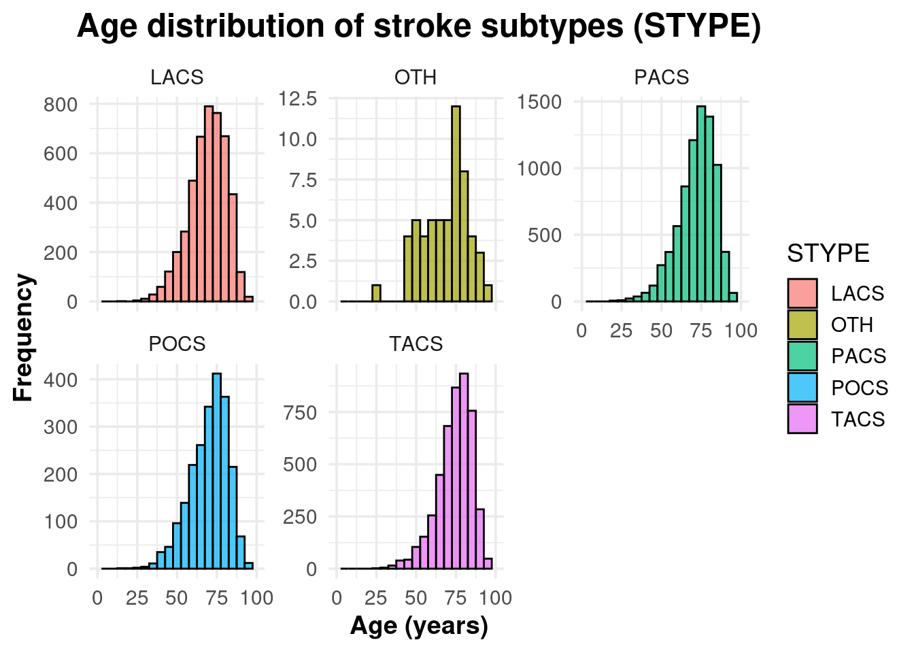
Or using boxplots:
ggplot(dataset, aes(x = STYPE, y = AGE, fill = STYPE)) +
geom_boxplot(alpha = 0.7, outlier.shape = NA) + # Boxplot without outlier points
labs(
title = "Stroke subtypes distributed by age",
x = "Stroke Type (STYPE)",
y = "Age (years)"
) +
theme_minimal(base_size = 14) +
theme(
plot.title = element_text(hjust = 0.5, face = "bold", size = 18),
axis.title.x = element_text(face = "bold", size = 14),
axis.title.y = element_text(face = "bold", size = 14),
legend.position = "right"
)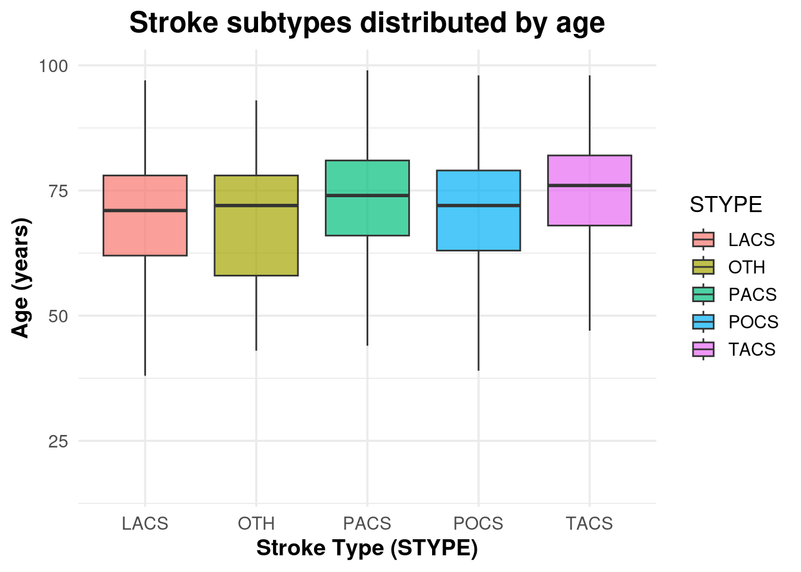
STYPE_median <- dataset |>
group_by(STYPE) |>
summarize(Median_AGE = median(AGE, na.rm = TRUE))
print(STYPE_median)# A tibble: 5 × 2
STYPE Median_AGE
<chr> <dbl>
1 LACS 71
2 OTH 72
3 PACS 74
4 POCS 72
5 TACS 76The median age of the different stroke subtypes are shown, where the subtype TACS has the highest median age of 76 years.
- Effects of treatments
Data visualization
Boxplot for predicted probability of death at 6 months compared by gender
# Boxplot of predicted probability of death at 6 months distributed by gender
ggplot(dataset, aes(x = SEX, y = EXPDD,fill=SEX)) +
geom_boxplot(alpha = 0.7,color="black") +
scale_fill_manual(values = c("darkred", "blue")) + # Custom fill colors for gender
labs(
title = "Predicted probability of death at 6 months",
x = "Gender",
y = " EXPD6",
fill = "Gender",
color = "Gender"
) +
theme_minimal(base_size = 14) +
theme(
plot.title = element_text(hjust = 0.5, face = "bold", size = 18),
axis.title.x = element_text(face = "bold", size = 14),
axis.title.y = element_text(face = "bold", size = 14),
legend.position = "top"
) +
scale_y_continuous(
limits = c(0, 1), # Adjust the range to display outliers
expand = expansion(mult = c(0.05, 0.1)) # Add some space for outliers
)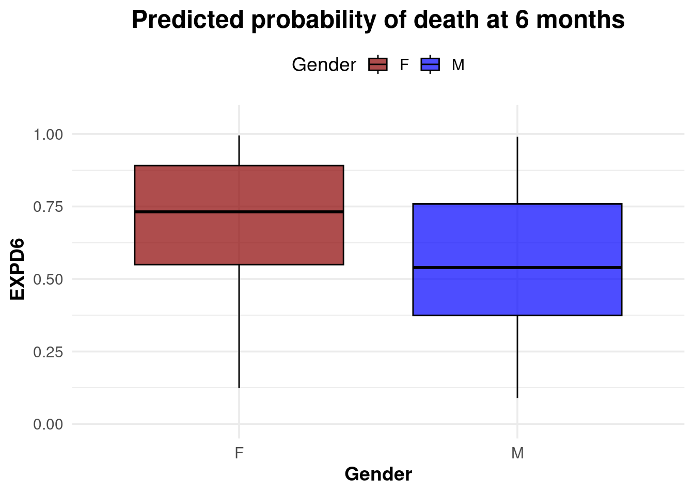
#Show median EXPDD by gender
median_table <- dataset |>
group_by(SEX) |>
summarize(Median_EXPDD = median(EXPDD, na.rm = TRUE))
print(median_table)# A tibble: 2 × 2
SEX Median_EXPDD
<chr> <dbl>
1 F 0.732
2 M 0.539From the medians of the EXPDD variable, it can be seen by comparing the genders, that females have a higher median of 0.73175 than males (0.53940), thus a relatively higher predicted probability of death at 6 months from randomization.
Description of Data
From the paper - figure 1 and table 1 + 2 + 3 + 4 + 5 + 6
Figure 1 - the group sizes:
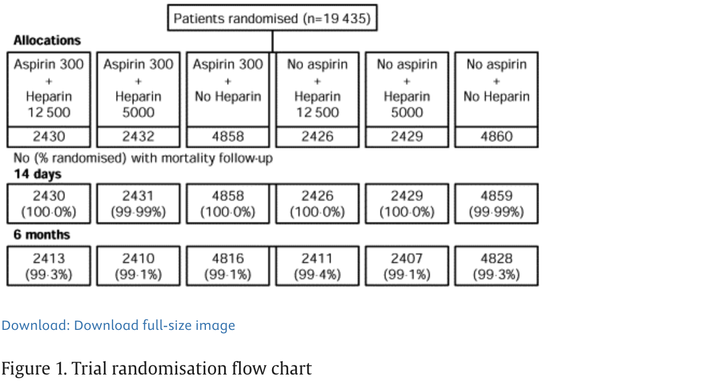
library(ggplot2)
library(dplyr)
library(readr)data <- read_tsv("../data/03_dat_aug.tsv")Rows: 19435 Columns: 98
── Column specification ────────────────────────────────────────────────────────
Delimiter: "\t"
chr (69): RCONSC, SEX, RSLEEP, RATRIAL, RCT, RVISINF, RHEP24, RASP3, RDEF1, ...
dbl (28): USUBJID, RDELAY, AGE, RSBP, RYEAR, HOURLOCAL, MINLOCAL, DAYLOCAL, ...
lgl (1): DDEAD
ℹ Use `spec()` to retrieve the full column specification for this data.
ℹ Specify the column types or set `show_col_types = FALSE` to quiet this message.data |>
group_by(data_group) |>
count()# A tibble: 6 × 2
# Groups: data_group [6]
data_group n
<chr> <int>
1 Asp(No)-Hep(No) 4860
2 Asp(No)-Hep(low) 2429
3 Asp(No)-Hep(med) 2426
4 Asp-Hep(No) 4858
5 Asp-Hep(low) 2432
6 Asp-Hep(med) 2430Table 1 - characteristics of patients
Table 2 - outcome of the different groups after 14 days
Table 3 - outcome of the different groups after 6 months
Table 4 - outcome of the different groups after 14 days split up into groups with and without atrial fibrillation
Table 5 - outcome of the different groups after 14 days of only heparin split between small and medium dose
Table 6 - Direct comparison of low dose heparin and aspirin absolute outcomes after 14 days compared to the control
Data Analysis
We want to investigate the apperent beneficial effect of the treatment by aspirin and heparin, divided into the different subgroups of the data. We will do that with inspiration from figure 2 in the original paper.
The CI of the different treatments looking at different subgroups in the data. Pay note that some of the groups are represented by a 95% CI and others has a 99% CI. The 99% CI is used for all the subgroups, while the 95% CI is for the main group. Size of square refer to the amount of available information (the sample size).
Loading libraries
library("tidyverse")
library("patchwork")Loading data
data <- read_tsv("../data/03_dat_aug.tsv")Rows: 19435 Columns: 98
── Column specification ────────────────────────────────────────────────────────
Delimiter: "\t"
chr (69): RCONSC, SEX, RSLEEP, RATRIAL, RCT, RVISINF, RHEP24, RASP3, RDEF1, ...
dbl (28): USUBJID, RDELAY, AGE, RSBP, RYEAR, HOURLOCAL, MINLOCAL, DAYLOCAL, ...
lgl (1): DDEAD
ℹ Use `spec()` to retrieve the full column specification for this data.
ℹ Specify the column types or set `show_col_types = FALSE` to quiet this message.Heparin vs. Control Subgroup Analysis
Data augmentation - Creating the desired subgroups
data_slim_heparin <- data |>
mutate("Heparin" = case_when(
RXHEP == 'L' ~ 'Y',
RXHEP == 'M' ~ 'Y',
RXHEP == 'N' ~ 'N',
is.na(RXHEP) ~ NA)) |>
mutate("Outcome" = case_when(
OCCODE == "dead" ~ "dead/dependent",
OCCODE == "dependent" ~ "dead/dependent",
OCCODE == "not recovered" ~ "independent",
OCCODE == "recovered" ~ "independent",
is.na(OCCODE) ~ NA
)) |>
mutate("RDELAY_group" = case_when(
RDELAY <= 8 ~ "0-8h",
RDELAY <= 12 ~ "9-12h",
RDELAY <= 24 ~ "13-24h",
RDELAY <= 48 ~ "25-48h",
TRUE ~ NA)) |>
mutate("AGE_group" = case_when(
AGE <= 75 ~ "≤75",
AGE > 75 ~ ">75"
)) |>
mutate("RSBP_group" = case_when(
RSBP <= 180 ~ "≤180",
RSBP > 180 ~ ">180")) |>
mutate("EXPDD_group" = case_when(
EXPDD <= 0.4 ~ "0-40%",
EXPDD <= 0.65 ~ "40-65%",
EXPDD <= 0.90 ~ "65-90%",
EXPDD <= 1 ~ "90-100%")) |>
select(Heparin,Outcome,RXASP,RDELAY_group,SEX,AGE_group,RSLEEP,RCONSC,RATRIAL,RSBP_group,STYPE,RDEF3,RCT,RVISINF,DDIAG,RASP3,RHEP24,EXPDD_group)Data augmentation - Calculating the statistics used in the plot
data_nested_heparin <- data_slim_heparin |>
pivot_longer(cols = -c(Heparin,Outcome), names_to = "group", values_to = "subgroup") |>
drop_na() |>
group_by(Heparin,Outcome,group,subgroup) |>
count() |>
mutate(n = n/1000) |>
group_by(group,subgroup) |>
nest() |>
ungroup()data_statistics_heparin <- data_nested_heparin |>
mutate(data = map(.x = data,
.f = ~ .x |>
pivot_wider(
names_from = Outcome,
values_from = n))) |>
mutate(Total_dead = map_dbl(.x = data,
.f = ~sum(.x |> pull(`dead/dependent`))),
Total_patients = map_dbl(.x = data,
.f = ~sum(.x |> pull(`dead/dependent`))+sum(.x |> pull(independent))),
Dead_rate = Total_dead / Total_patients) |>
mutate(data = map2(.x = data,
.y = Dead_rate,
.f = ~ .x |>
mutate(Expected_deaths = .y*(`dead/dependent`+independent)))) |>
mutate(E = map_dbl(.x = data,
.f = ~ .x |>
select(Heparin,Expected_deaths) |>
pivot_wider(
names_from = Heparin,
values_from = Expected_deaths) |>
mutate(difference = Y - N) |>
pull(difference))) |>
mutate(O = map_dbl(.x = data,
.f = ~ .x |>
select(Heparin,`dead/dependent`) |>
pivot_wider(
names_from = Heparin,
values_from = `dead/dependent`) |>
mutate(difference = Y - N) |>
pull(difference))) |>
mutate(V = map_dbl(.x = data,
.f = ~ .x |>
mutate(inv_dead = 1/`dead/dependent`,
inv_alive = 1/independent) |>
summarise(total = sum(inv_dead) + sum(inv_alive)) |>
pull(total)))k <- 0.207
alpha <- 0.99
data_CI_heparin <- data_statistics_heparin |>
mutate(Ad_ben = k*(O-E),
std_dev = k*sqrt(V),
CI_lower = Ad_ben - qnorm(alpha/2)*std_dev,
CI_upper = Ad_ben + qnorm(alpha/2)*std_dev) |>
unite(group_name, c(group,subgroup))Data Illustration
First the group labels are created for the plot
full_labels_heparin <- c(
"AGE_group_>75" = "Age >75",
"AGE_group_≤75" = "Age ≤75",
"DDIAG_DDIAGHA" = "Final diagnosis: Haemorrhagic stroke",
"DDIAG_DDIAGISC" = "Final diagnosis: Ischaemic stroke",
"DDIAG_DDIAGUN" = "Final diagnosis: Indeterminate stroke",
"DDIAG_DNOSTRK" = "Final diagnosis: Not a stroke",
"EXPDD_group_0-40%" = "Predicted probability of death/dependence at 6 month: 0-40%",
"EXPDD_group_40-65%" = "Predicted probability of death/dependence at 6 month: 40-65%",
"EXPDD_group_65-90%" = "Predicted probability of death/dependence at 6 month: 65-90%",
"EXPDD_group_90-100%" = "Predicted probability of death/dependence at 6 month: 90-100%",
"RASP3_N" = "No aspirin within 3 days prior to randomisation",
"RASP3_Y" = "Aspirin within 3 days prior to randomisation",
"RHEP24_N" = "No heparin within 24 hours prior to randomisation",
"RHEP24_Y" = "Heparin within 24 hours prior to randomisation",
"RATRIAL_N" = "No atrial fibrillation",
"RATRIAL_Y" = "Atrial fibrillation",
"RCONSC_D" = "Drowsy state at randomisation",
"RCONSC_F" = "Fully alert at randomisation",
"RCONSC_U" = "Unconcious at randomisation",
"RCT_N" = "No CT before randomisation",
"RCT_Y" = "CT before randomisation",
"RDEF3_N" = "No leg/foot deficit",
"RDEF3_Y" = "Leg/foot deficit",
"RDELAY_group_0-8h" = "0-8 hour delay between stroke and randomisation",
"RDELAY_group_9-12h" = "9-12 hour delay between stroke and randomisation",
"RDELAY_group_13-24h" = "13-24 hour delay between stroke and randomisation",
"RDELAY_group_25-48h" = "25-48 hour delay between stroke and randomisation",
"RSBP_group_≤180" = "Systolic blood pressure under 180mmHg at randomisation",
"RSBP_group_>180" = "Systolic blood pressure over 180mmHg at randomisation",
"RSLEEP_N" = "Symptoms appearing while awake",
"RSLEEP_Y" = "Symptoms appearing while asleep",
"RVISINF_N" = "No infarct visible on CT",
"RVISINF_Y" = "Infarct visible on CT",
"RXASP_N" = "No trial aspirin allocated",
"RXASP_Y" = "Trial aspirin allocated",
"SEX_F" = "Female",
"SEX_M" = "Male",
"STYPE_LACS" = "Stroke subtype: Lacunar syndrome",
"STYPE_PACS" = "Stroke subtype: Partial anterior circulation syndrome",
"STYPE_POCS" = "Stroke subtype: Posterior circulation syndrome",
"STYPE_TACS" = "Stroke subtype: Total anterior circulation syndrome",
"STYPE_OTH" = "Stroke subtype: Other"
)
data_CI_ordered_heparin <- data_CI_heparin |>
mutate(group_name = factor(group_name,
levels = c("EXPDD_group_90-100%","EXPDD_group_65-90%","EXPDD_group_40-65%","EXPDD_group_0-40%","DDIAG_DNOSTRK","DDIAG_DDIAGUN","DDIAG_DDIAGISC","DDIAG_DDIAGHA","RDEF3_Y","RDEF3_N","RSLEEP_Y","RSLEEP_N","RCONSC_U","RCONSC_F","RCONSC_D","RDELAY_group_25-48h","RDELAY_group_13-24h","RDELAY_group_9-12h","RDELAY_group_0-8h","STYPE_OTH","STYPE_TACS","STYPE_POCS","STYPE_PACS","STYPE_LACS","RATRIAL_Y","RATRIAL_N","RVISINF_Y","RVISINF_N","RCT_Y","RCT_N","RHEP24_Y","RHEP24_N","RASP3_Y","RASP3_N","RSBP_group_>180","RSBP_group_≤180","RXASP_Y","RXASP_N","SEX_M","SEX_F","AGE_group_≤75","AGE_group_>75"), ordered = TRUE))The plot is created similarly to the figure 2 in the data
p1 <- data_CI_heparin |>
ggplot(aes(x = Ad_ben,
y = group_name,
xmin = CI_lower,
xmax = CI_upper))+
geom_point(aes(size = Total_patients),shape = 15)+
geom_errorbarh(color = "blue")+
geom_vline(xintercept = 0, color = "grey", linetype = 2)+
scale_y_discrete(labels = full_labels_heparin)+
scale_size_continuous(range = c(1,3))+
labs(title = "Heparin reduces the risk of death or dependence after 6 months for only a few subgroups",
x = "Reductions in odds of being dead or dependent at six months for heparin versus no heparin",
size = "Group size \n (in 1000 patients)")+
theme_minimal()+
theme(axis.title.y = element_blank(),
legend.position = "bottom")
p1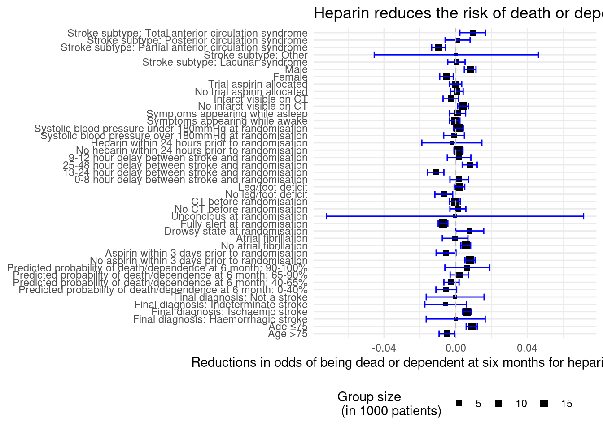
Aspirin vs. Control Subgroup Analysis
Data augmentation - Creating the desired subgroups
data_slim_aspirin <- data |>
mutate("Aspirin" = RXASP) |>
mutate("Outcome" = case_when(
OCCODE == "dead" ~ "dead/dependent",
OCCODE == "dependent" ~ "dead/dependent",
OCCODE == "not recovered" ~ "independent",
OCCODE == "recovered" ~ "independent",
is.na(OCCODE) ~ NA
)) |>
mutate("RDELAY_group" = case_when(
RDELAY <= 8 ~ "0-8h",
RDELAY <= 12 ~ "9-12h",
RDELAY <= 24 ~ "13-24h",
RDELAY <= 48 ~ "25-48h",
TRUE ~ NA)) |>
mutate("AGE_group" = case_when(
AGE <= 75 ~ "≤75",
AGE > 75 ~ ">75"
)) |>
mutate("RSBP_group" = case_when(
RSBP <= 180 ~ "≤180",
RSBP > 180 ~ ">180")) |>
mutate("EXPDD_group" = case_when(
EXPDD <= 0.4 ~ "0-40%",
EXPDD <= 0.65 ~ "40-65%",
EXPDD <= 0.90 ~ "65-90%",
EXPDD <= 1 ~ "90-100%")) |>
select(Aspirin,Outcome,RXHEP,RDELAY_group,SEX,AGE_group,RSLEEP,RCONSC,RATRIAL,RSBP_group,STYPE,RDEF3,RCT,RVISINF,DDIAG,RASP3,RHEP24,EXPDD_group)Data augmentation - Calculating the statistics used in the plot
data_nested_aspirin <- data_slim_aspirin |>
pivot_longer(cols = -c(Aspirin,Outcome), names_to = "group", values_to = "subgroup") |>
drop_na() |>
group_by(Aspirin,Outcome,group,subgroup) |>
count() |>
mutate(n = n/1000) |>
group_by(group,subgroup) |>
nest() |>
ungroup()data_statistics_aspirin <- data_nested_aspirin |>
mutate(data = map(.x = data,
.f = ~ .x |>
pivot_wider(
names_from = Outcome,
values_from = n))) |>
mutate(Total_dead = map_dbl(.x = data,
.f = ~sum(.x |> pull(`dead/dependent`))),
Total_patients = map_dbl(.x = data,
.f = ~sum(.x |> pull(`dead/dependent`))+sum(.x |> pull(independent))),
Dead_rate = Total_dead / Total_patients) |>
mutate(data = map2(.x = data,
.y = Dead_rate,
.f = ~ .x |>
mutate(Expected_deaths = .y*(`dead/dependent`+independent)))) |>
mutate(E = map_dbl(.x = data,
.f = ~ .x |>
select(Aspirin,Expected_deaths) |>
pivot_wider(
names_from = Aspirin,
values_from = Expected_deaths) |>
mutate(difference = Y - N) |>
pull(difference))) |>
mutate(O = map_dbl(.x = data,
.f = ~ .x |>
select(Aspirin,`dead/dependent`) |>
pivot_wider(
names_from = Aspirin,
values_from = `dead/dependent`) |>
mutate(difference = Y - N) |>
pull(difference))) |>
mutate(V = map_dbl(.x = data,
.f = ~ .x |>
mutate(inv_dead = 1/`dead/dependent`,
inv_alive = 1/independent) |>
summarise(total = sum(inv_dead) + sum(inv_alive)) |>
pull(total)))k <- 0.207
alpha <- 0.99
data_CI_aspirin <- data_statistics_aspirin |>
mutate(Ad_ben = k*(O-E),
std_dev = k*sqrt(V),
CI_lower = Ad_ben + qnorm(alpha/2)*std_dev,
CI_upper = Ad_ben - qnorm(alpha/2)*std_dev) |>
unite(group_name, c(group,subgroup))Data Illustration
First the group labels are created for the plot
full_labels_aspirin <- c(
"AGE_group_>75" = "Age >75",
"AGE_group_≤75" = "Age ≤75",
"DDIAG_DDIAGHA" = "Final diagnosis: Haemorrhagic stroke",
"DDIAG_DDIAGISC" = "Final diagnosis: Ischaemic stroke",
"DDIAG_DDIAGUN" = "Final diagnosis: Indeterminate stroke",
"DDIAG_DNOSTRK" = "Final diagnosis: Not a stroke",
"EXPDD_group_0-40%" = "Predicted probability of death/dependence at 6 month: 0-40%",
"EXPDD_group_40-65%" = "Predicted probability of death/dependence at 6 month: 40-65%",
"EXPDD_group_65-90%" = "Predicted probability of death/dependence at 6 month: 65-90%",
"EXPDD_group_90-100%" = "Predicted probability of death/dependence at 6 month: 90-100%",
"RASP3_N" = "No aspirin within 3 days prior to randomisation",
"RASP3_Y" = "Aspirin within 3 days prior to randomisation",
"RHEP24_N" = "No heparin within 24 hours prior to randomisation",
"RHEP24_Y" = "Heparin within 24 hours prior to randomisation",
"RATRIAL_N" = "No atrial fibrillation",
"RATRIAL_Y" = "Atrial fibrillation",
"RCONSC_D" = "Drowsy state at randomisation",
"RCONSC_F" = "Fully alert at randomisation",
"RCONSC_U" = "Unconcious at randomisation",
"RCT_N" = "No CT before randomisation",
"RCT_Y" = "CT before randomisation",
"RDEF3_N" = "No leg/foot deficit",
"RDEF3_Y" = "Leg/foot deficit",
"RDELAY_group_0-8h" = "0-8 hour delay between stroke and randomisation",
"RDELAY_group_9-12h" = "9-12 hour delay between stroke and randomisation",
"RDELAY_group_13-24h" = "13-24 hour delay between stroke and randomisation",
"RDELAY_group_25-48h" = "25-48 hour delay between stroke and randomisation",
"RSBP_group_≤180" = "Systolic blood pressure under 180mmHg at randomisation",
"RSBP_group_>180" = "Systolic blood pressure over 180mmHg at randomisation",
"RSLEEP_N" = "Symptoms appearing while awake",
"RSLEEP_Y" = "Symptoms appearing while asleep",
"RVISINF_N" = "No infarct visible on CT",
"RVISINF_Y" = "Infarct visible on CT",
"RXHEP_N" = "No trial heparin allocated",
"RXHEP_L" = "Trial heparin low dose allocated",
"RXHEP_M" = "Trial heparin medium allocated",
"SEX_F" = "Female",
"SEX_M" = "Male",
"STYPE_LACS" = "Stroke subtype: Lacunar syndrome",
"STYPE_PACS" = "Stroke subtype: Partial anterior circulation syndrome",
"STYPE_POCS" = "Stroke subtype: Posterior circulation syndrome",
"STYPE_TACS" = "Stroke subtype: Total anterior circulation syndrome",
"STYPE_OTH" = "Stroke subtype: Other")
data_CI_ordered_aspirin <- data_CI_aspirin |>
mutate(group_name = factor(group_name,
levels = c("EXPDD_group_90-100%","EXPDD_group_65-90%","EXPDD_group_40-65%","EXPDD_group_0-40%","DDIAG_DNOSTRK","DDIAG_DDIAGUN","DDIAG_DDIAGISC","DDIAG_DDIAGHA","RDEF3_Y","RDEF3_N","RSLEEP_Y","RSLEEP_N","RCONSC_U","RCONSC_F","RCONSC_D","RDELAY_group_25-48h","RDELAY_group_13-24h","RDELAY_group_9-12h","RDELAY_group_0-8h","STYPE_OTH","STYPE_TACS","STYPE_POCS","STYPE_PACS","STYPE_LACS","RATRIAL_Y","RATRIAL_N","RVISINF_Y","RVISINF_N","RCT_Y","RCT_N","RHEP24_Y","RHEP24_N","RASP3_Y","RASP3_N","RSBP_group_>180","RSBP_group_≤180","RXHEP_M","RXHEP_L","RXHEP_N","SEX_M","SEX_F","AGE_group_≤75","AGE_group_>75"), ordered = TRUE))The plot is created similarly to the figure 2 in the data
p2 <- data_CI_ordered_aspirin |>
ggplot(aes(x = Ad_ben,
y = group_name,
xmin = CI_lower,
xmax = CI_upper))+
geom_point(aes(size = Total_patients),shape = 15)+
geom_errorbarh(color = "blue")+
geom_vline(xintercept = 0, color = "grey", linetype = 2)+
scale_y_discrete(labels = full_labels_aspirin)+
scale_size_continuous(range = c(1,3))+
labs(title = "Aspirin reduces the risk of death or dependence after 6 months for many subgroups",
x = "Reductions in odds of being dead or dependent at six months for aspirin versus no aspirin",
size = "Group size \n (in 1000 patients)")+
theme_minimal()+
theme(axis.title.y = element_blank(),
legend.position = "bottom")+
annotate("text", x=-0.04, y="AGE_group_>75", label= "Aspirin better") +
annotate("text", x = 0.04, y="AGE_group_>75", label = "Aspirin worse")
p2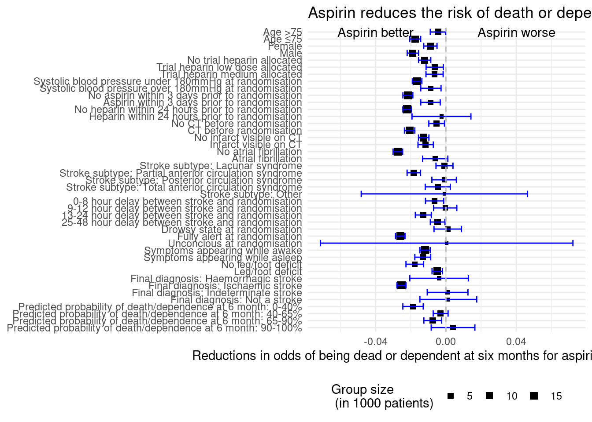
Save the results
ggsave(filename = "../results/05_keyplot_2a.png", plot = p1)Saving 7 x 5 in imageggsave(filename = "../results/05_keyplot_2b.png", plot = p2)Saving 7 x 5 in imageShort-term effects of early anticoagulant therapy
Effects of anticoagulants during the scheduled treatment period (mostly about 14 days) in completed unconfounded randomised trials in acute ischaemic stroke on: (a) recurrent ischaemic stroke, (b) haemorrhagic stroke, (c) death from any cause or non-fatal stroke (non-fatal stroke includes non-fatal recurrent strokes of ischaemic or unknown type and haemorrhagic strokes). The overall results of the 95% CI is represented by diamonds.
In the report it looks like this:
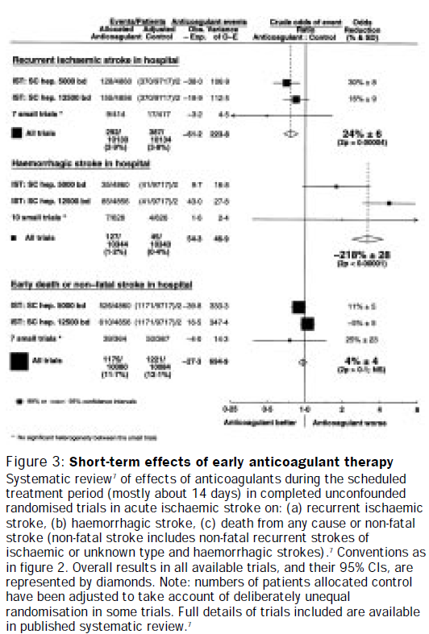
Loading libraries
#| eval: true
library("tidyverse")
library("ggplot2")
library("dplyr")
library("readr")Import the dataset
# Load the dataset
dataset <- read_tsv("../data/03_dat_aug.tsv")Rows: 19435 Columns: 98
── Column specification ────────────────────────────────────────────────────────
Delimiter: "\t"
chr (69): RCONSC, SEX, RSLEEP, RATRIAL, RCT, RVISINF, RHEP24, RASP3, RDEF1, ...
dbl (28): USUBJID, RDELAY, AGE, RSBP, RYEAR, HOURLOCAL, MINLOCAL, DAYLOCAL, ...
lgl (1): DDEAD
ℹ Use `spec()` to retrieve the full column specification for this data.
ℹ Specify the column types or set `show_col_types = FALSE` to quiet this message.Preparation of subgroups in data
# Prepare data
summary <- dataset |>
group_by(DH14) |> # Group by subgroups
summarize(
Events = sum(as.numeric(DEADC), na.rm = TRUE), # Sum events for each subgroup
Total = n(), # Total population in each subgroup
NonEvents = Total - Events # Calculate non-events
) |>
mutate(
Odds = Events / NonEvents, # Calculate odds
Reference_Odds = first(Odds), # Reference odds (assume first group is control)
Odds_Ratio = Odds / Reference_Odds, # Calculate odds ratio
Variance = 1 / Events + 1 / NonEvents +
1 / first(Events) + 1 / first(NonEvents), # Variance for confidence intervals
CI_Lower = exp(log(Odds_Ratio) - 1.96 * sqrt(Variance)), # Lower bound of 95% CI
CI_Upper = exp(log(Odds_Ratio) + 1.96 * sqrt(Variance)), # Upper bound of 95% CI
Reduction = paste0(round((1 - Odds_Ratio) * 100, 1), "% ↓") # Calculate percentage reduction
)
# Display the summary table
print(summary)# A tibble: 4 × 11
DH14 Events Total NonEvents Odds Reference_Odds Odds_Ratio Variance CI_Lower
<chr> <dbl> <int> <dbl> <dbl> <dbl> <dbl> <dbl> <dbl>
1 C 7875 10571 2696 2.92 2.92 1 0.000996 0.940
2 L 3372 4540 1168 2.89 2.92 0.988 0.00165 0.913
3 M 3328 4281 953 3.49 2.92 1.20 0.00185 1.10
4 <NA> 37 43 6 6.17 2.92 2.11 0.194 0.890
# ℹ 2 more variables: CI_Upper <dbl>, Reduction <chr>Recreate figure 3
# Create forest plot
forest_plot <- ggplot(summary, aes(x = Odds_Ratio, y = DH14)) +
geom_point(size = 4) + # Add points for odds ratios
geom_errorbarh(aes(xmin = CI_Lower, xmax = CI_Upper), height = 0.2) + # Add error bars
geom_text(aes(label = Reduction), hjust = -0.2, size = 3) + # Annotate percentage reduction
scale_x_log10(limits = c(0.5, 2)) + # Log scale for odds ratios
labs(
title = "Anticoagulant vs Control",
x = "Anticoagulant Better Anticoagulant Worse",
y = "Subgroup"
) +
theme_minimal() +
theme(
axis.text.y = element_text(size = 10),
axis.title.x = element_text(size = 10, face = "bold"),
plot.title = element_text(hjust = 0.5, size = 12, face = "bold")
)
# Print the plot
print(forest_plot)Warning: Removed 1 row containing missing values or values outside the scale range
(`geom_point()`).Warning: Removed 1 row containing missing values or values outside the scale range
(`geom_errorbarh()`).Warning: Removed 1 row containing missing values or values outside the scale range
(`geom_text()`).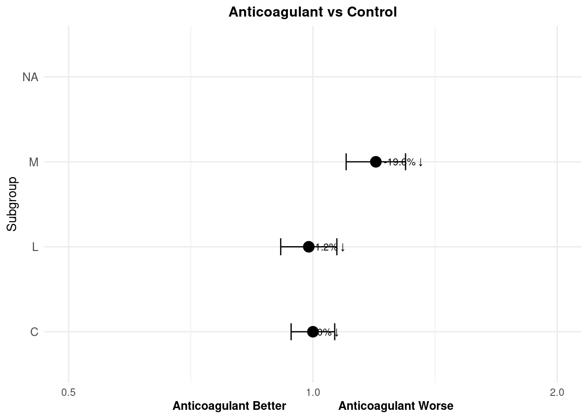
Add Supporting Table
Combine the summary table and the forest plot:
library(gridExtra)
Attaching package: 'gridExtra'The following object is masked from 'package:dplyr':
combine# Create a table of summary statistics
table <- tableGrob(summary |>
select(DH14, Odds_Ratio, CI_Lower, CI_Upper, Reduction),
rows = NULL)
# Arrange the table and plot side by side
grid.arrange(forest_plot, table, ncol = 2)Warning: Removed 1 row containing missing values or values outside the scale range
(`geom_point()`).Warning: Removed 1 row containing missing values or values outside the scale range
(`geom_errorbarh()`).Warning: Removed 1 row containing missing values or values outside the scale range
(`geom_text()`).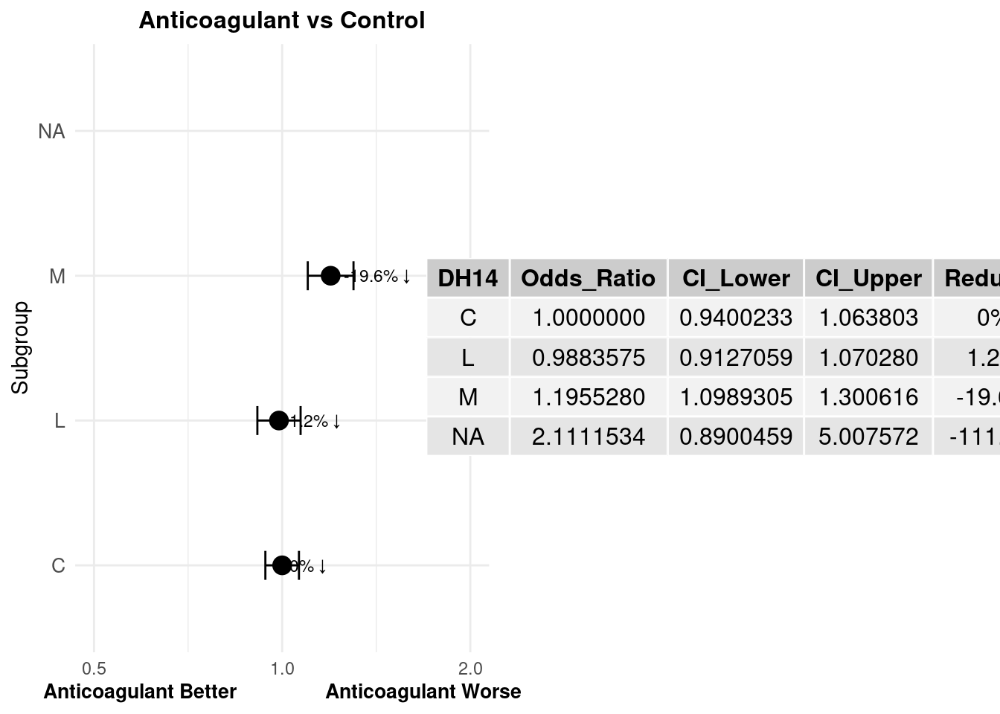
Data Analysis
Long-term effects of early anticoagulant therapy
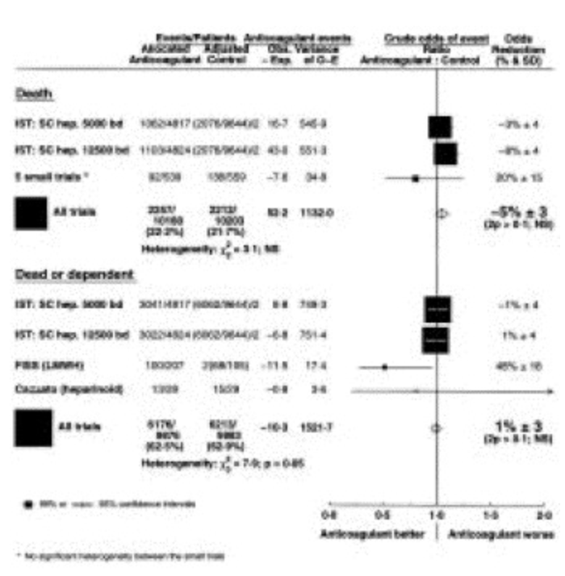
Effects of anticoagulants at end of scheduled follow-up period (generally 3, or as in the IST, 6 months) in completed unconfounded randomised trials in acute ischaemic stroke on: (a) death from any cause, and (b) death or dependency in activities of daily living
Loading libraries
library("tidyverse")
library("ggplot2")
library("dplyr")
library("readr")Loading data
data<- read_tsv("../data/03_dat_aug.tsv")Rows: 19435 Columns: 98
── Column specification ────────────────────────────────────────────────────────
Delimiter: "\t"
chr (69): RCONSC, SEX, RSLEEP, RATRIAL, RCT, RVISINF, RHEP24, RASP3, RDEF1, ...
dbl (28): USUBJID, RDELAY, AGE, RSBP, RYEAR, HOURLOCAL, MINLOCAL, DAYLOCAL, ...
lgl (1): DDEAD
ℹ Use `spec()` to retrieve the full column specification for this data.
ℹ Specify the column types or set `show_col_types = FALSE` to quiet this message.Preparation of subgroups in data
Data analysis
Effects subdivided by heparin and aspirin
Allocation on:
absolute risk of symptomatic intracranial haemorrhage;
absolute risk of transfused or fatal extracranial haemorrhage;
absolute risk of recurrent ischaemic stroke;
absolute risk of pulmonary embolism reported (with possibility of substantial under-reporting)
Error bars plot one standard error for percentage. For each bar, lower part gives number and percentage of fatal events.
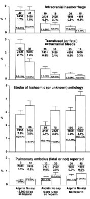
library(ggplot2)
library(dplyr)
library(readr)data <- read_tsv("../data/03_dat_aug.tsv")Rows: 19435 Columns: 98
── Column specification ────────────────────────────────────────────────────────
Delimiter: "\t"
chr (69): RCONSC, SEX, RSLEEP, RATRIAL, RCT, RVISINF, RHEP24, RASP3, RDEF1, ...
dbl (28): USUBJID, RDELAY, AGE, RSBP, RYEAR, HOURLOCAL, MINLOCAL, DAYLOCAL, ...
lgl (1): DDEAD
ℹ Use `spec()` to retrieve the full column specification for this data.
ℹ Specify the column types or set `show_col_types = FALSE` to quiet this message.data |>
group_by(data_group) |>
count()# A tibble: 6 × 2
# Groups: data_group [6]
data_group n
<chr> <int>
1 Asp(No)-Hep(No) 4860
2 Asp(No)-Hep(low) 2429
3 Asp(No)-Hep(med) 2426
4 Asp-Hep(No) 4858
5 Asp-Hep(low) 2432
6 Asp-Hep(med) 2430data |>
group_by(DH14, RXASP) |>
count() |>
ggplot(aes(x = DH14, y = n, fill = RXASP)) +
geom_col(position = position_dodge(preserve = "single"))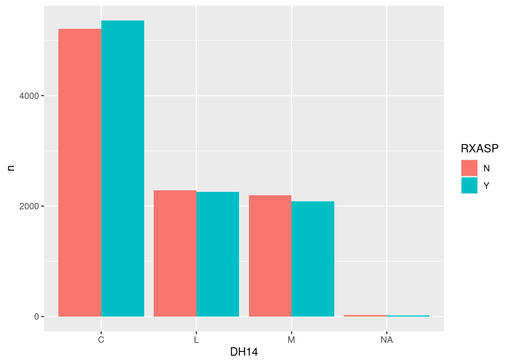
data_3 <- data |>
select(DH14, RXASP, DRSH) |>
mutate(across(DRSH))data_4 <- data_3 |>
group_by(DH14, RXASP, DRSH) |>
filter(!is.na(DRSH)) |>
count()
data_4# A tibble: 14 × 4
# Groups: DH14, RXASP, DRSH [14]
DH14 RXASP DRSH n
<chr> <chr> <chr> <int>
1 C N N 5184
2 C N Y 24
3 C Y N 5328
4 C Y Y 33
5 L N N 2279
6 L N Y 4
7 L Y N 2252
8 L Y Y 4
9 M N N 2178
10 M N Y 19
11 M Y N 2070
12 M Y Y 13
13 <NA> N N 15
14 <NA> Y N 8data_5 <- data_4 |>
group_by(DH14, RXASP) |>
mutate(total_in_group = sum(n),
percentage = ifelse(DRSH == "Y", n / total_in_group * 100, 0)) |>
filter(DRSH != "N") |>
mutate(DH14 = factor(DH14, levels = c("M", "L", "C")),
RXASP = factor(RXASP, levels = c("Y", "N")))data_5 |>
ggplot(aes(x = DH14, y = percentage, fill = RXASP)) +
geom_col(position = position_dodge(preserve = "single"),
alpha = 0.7,
color = "black") +
geom_text(aes(label = round(percentage, 2)),
position = position_dodge(width = 0.9),
vjust = -0.5,
size = 3) +
labs(title = "Percentage of patients with recurrent Haemorrhagic stroke after 14 days",
subtitle = "These numbers are from second consultation 14 days after randomisation",
x = NULL,
y = "%",
fill = "Aspirin Dosing") +
scale_fill_brewer(palette = "Dark2",
labels = c("Y" = "300 mg daily",
"N" = "No Aspirin")) +
theme_minimal() +
theme(legend.position = "bottom",
axis.title.y = element_text(angle = 0, vjust = 0.5),
panel.grid.major.x = element_blank()) +
scale_x_discrete(labels = c("M" = "12500 IU Heparin",
"L" = "5000 IU Heparin",
"C" = "No Heparin"))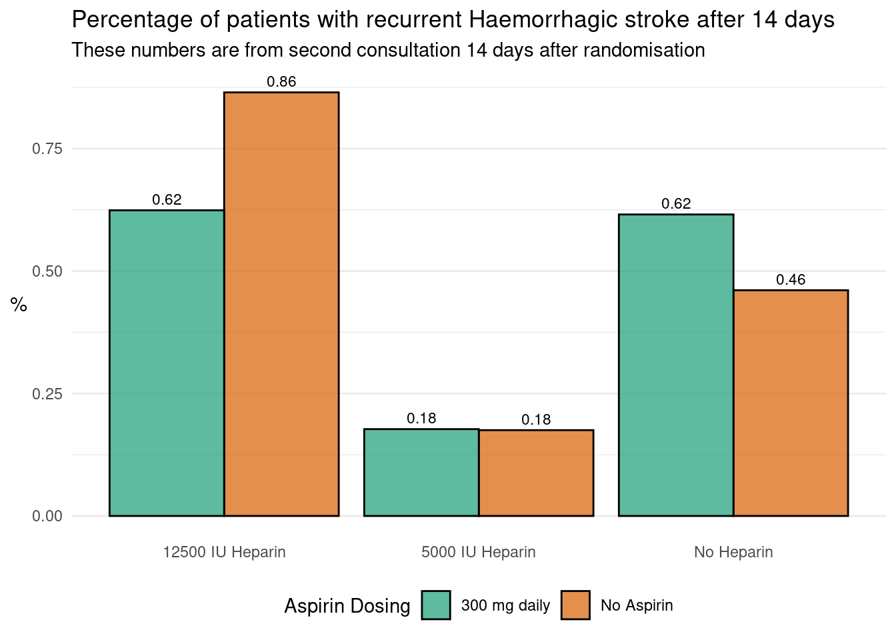
#{{< include 09_analysis_5.qmd >}}
Data analysis
Creation of figure 5A: H14
Creation of figure 5B: TRAN14
Creation of figure 5D: PE14
Loading Libraries
library(tidyverse)
library(ggplot2)
library(dplyr)
library(readr)Loading Data
data <- read_tsv("../data/03_dat_aug.tsv")Rows: 19435 Columns: 98
── Column specification ────────────────────────────────────────────────────────
Delimiter: "\t"
chr (69): RCONSC, SEX, RSLEEP, RATRIAL, RCT, RVISINF, RHEP24, RASP3, RDEF1, ...
dbl (28): USUBJID, RDELAY, AGE, RSBP, RYEAR, HOURLOCAL, MINLOCAL, DAYLOCAL, ...
lgl (1): DDEAD
ℹ Use `spec()` to retrieve the full column specification for this data.
ℹ Specify the column types or set `show_col_types = FALSE` to quiet this message.Creating Function
box_func <- function(event){
#Makes it possible to use column name as variable for function
column_name <- enquo(event)
# Convert column name to a readable string for the title
event_name <- as_label(column_name)
#Selects only the data of the effect we are investigating
relevant_data <- data |>
select(RXHEP, RXASP, !!column_name)
percentage_data <- relevant_data |>
#Counts the patients in each group
group_by(RXHEP, RXASP, !!column_name) |>
count() |>
#Creates the six groups examined
group_by(RXHEP, RXASP) |>
#Creates a row with percentages for use in plot
mutate(total_in_group = sum(n),
percentage = n / total_in_group * 100,
#Calculating standard deviations
p = n / total_in_group,
se = sqrt(p * (1 - p) / total_in_group) * 100) |>
#Removes all patients with no reported pulmonary embolism
filter(!!column_name != "N")
#Create the order of doses of medicine, so they have the correct order in the plot
sorted_data <- percentage_data |>
mutate(RXHEP = factor(RXHEP, levels = c("M", "L", "N")),
RXASP = factor(RXASP, levels = c("Y", "N")))
plot_box <- sorted_data |>
ggplot(aes(#Stratisfy on dose of heparin
x = RXHEP,
#Expresses the chance of the event happening
y = percentage,
#Color by the dose of aspirin
fill = RXASP,
#Defines minimum for error bars
ymin = percentage - se,
#Defines maximum for error bars
ymax = percentage + se)) +
#Creates the columns - position_dodge-argument makes
geom_col(position = position_dodge(preserve = "single"),
alpha = 0.7,
color = "black") +
#Creates text for data
geom_text(aes(label = round(percentage, 2),
#Makes text centered in boxes and correct sizes
y = percentage / 2),
position = position_dodge(width = 0.9),
vjust = 0.5,
size = 4) +
#Adds errorbars
geom_errorbar(position = position_dodge(width = 0.9),
width = 0.3) +
#
labs(title = str_c("Percentage of patients with ", event_name),
x = NULL,
y = "%",
fill = "Aspirin Dosing") +
scale_fill_brewer(palette = "Dark2",
labels = c("Y" = "300 mg daily",
"N" = "No Aspirin")) +
#Chooses a design
theme_minimal() +
theme(legend.position = "bottom",
#Adjust y-axis tet
axis.title.y = element_text(angle = 0, vjust = 0.5),
#Adjusting horizontal lines
panel.grid.major.x = element_blank()) +
#Edits labels for the X-axis
scale_x_discrete(labels = c("M" = "12500 IU Heparin",
"L" = "5000 IU Heparin",
"N" = "No Heparin"))
#Defines final output of function to be the plot
return(plot_box)
}box_func(H14)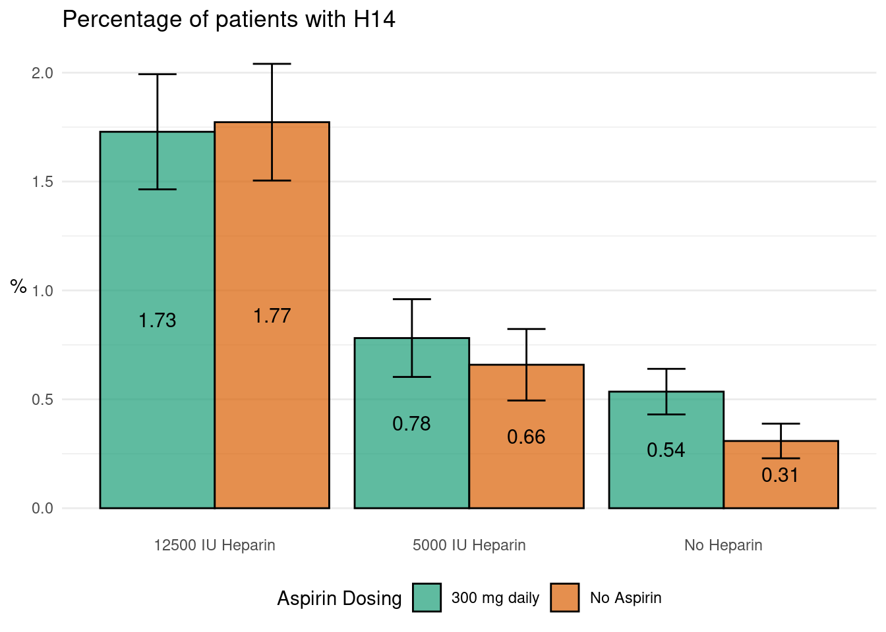
box_func(TRAN14)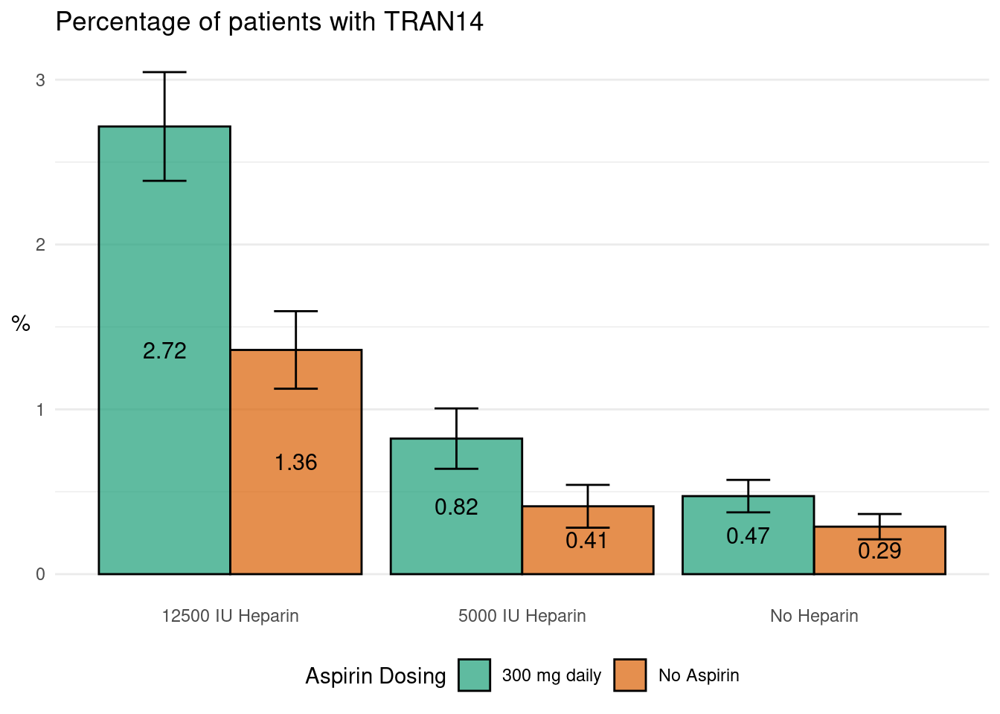
box_func(PE14)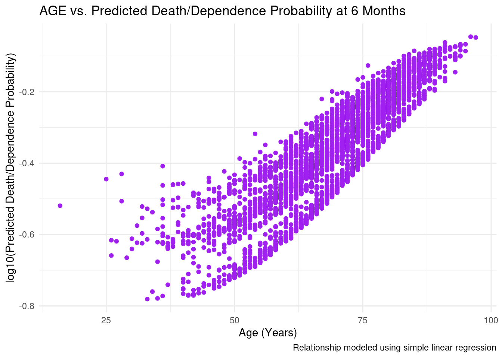
Libraries
library(tidyverse)
library(broom)
library(ggrepel)Load Data
data <- read_tsv("../data/03_dat_aug.tsv", show_col_types = FALSE)Analysis
Making a simple linear model for prediction of
EXPDD(Predicted probability of death/dependence at 6 month)EXPD6(Predicted probability of death at 6 month)EXPD14(Predicted probability of death at 14 days)
Model 1
Using AGE to see if can be used predict EXPDD.
(NOTE: It is not known from the data how
model_1 <- data |>
filter(STYPE == "LACS") |>
lm(data = _, EXPDD ~ AGE)model_1 |>
summary()
Call:
lm(formula = EXPDD ~ AGE, data = filter(data, STYPE == "LACS"))
Residuals:
Min 1Q Median 3Q Max
-0.14339 -0.04199 -0.00584 0.05201 0.43760
Coefficients:
Estimate Std. Error t value Pr(>|t|)
(Intercept) -3.151e-01 6.489e-03 -48.56 <2e-16 ***
AGE 1.125e-02 9.226e-05 121.93 <2e-16 ***
---
Signif. codes: 0 '***' 0.001 '**' 0.01 '*' 0.05 '.' 0.1 ' ' 1
Residual standard error: 0.07328 on 4655 degrees of freedom
Multiple R-squared: 0.7616, Adjusted R-squared: 0.7615
F-statistic: 1.487e+04 on 1 and 4655 DF, p-value: < 2.2e-16data |>
filter(STYPE == "LACS") |>
ggplot(aes(x = AGE, y = log10(EXPDD))) +
geom_point(color = "PURPLE")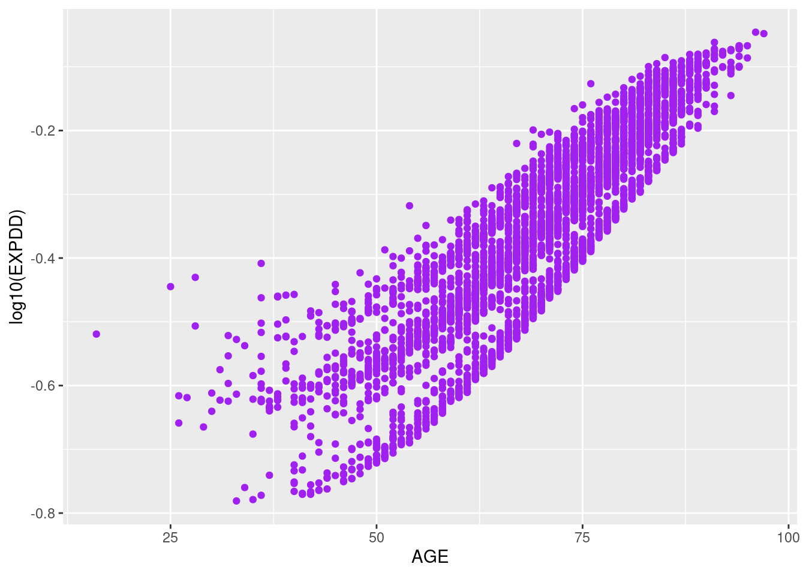
Model 2
model_2 <- data |>
filter(STYPE == "LACS") |>
lm(data = _, log2(EXPD6) ~ AGE)model_2 |>
summary()
Call:
lm(formula = log2(EXPD6) ~ AGE, data = filter(data, STYPE ==
"LACS"))
Residuals:
Min 1Q Median 3Q Max
-0.65386 -0.22350 0.00118 0.20142 0.93091
Coefficients:
Estimate Std. Error t value Pr(>|t|)
(Intercept) -9.0652887 0.0257476 -352.1 <2e-16 ***
AGE 0.0797957 0.0003661 218.0 <2e-16 ***
---
Signif. codes: 0 '***' 0.001 '**' 0.01 '*' 0.05 '.' 0.1 ' ' 1
Residual standard error: 0.2908 on 4655 degrees of freedom
Multiple R-squared: 0.9108, Adjusted R-squared: 0.9107
F-statistic: 4.751e+04 on 1 and 4655 DF, p-value: < 2.2e-16data |>
filter(STYPE == "LACS") |>
ggplot(aes(x = AGE, y = log2(EXPD6))) +
geom_point(color = "BLUE")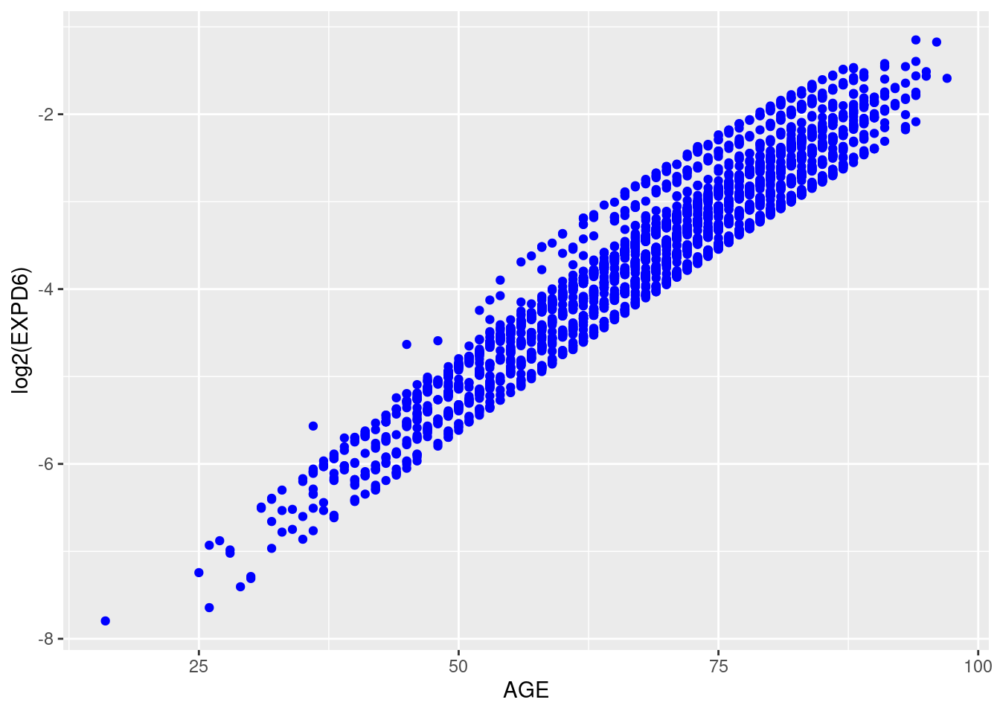
Model 3
model_3 <- data |>
filter(STYPE == "LACS") |>
lm(data = _, log2(EXPD14) ~ AGE)model_3 |>
summary()
Call:
lm(formula = log2(EXPD14) ~ AGE, data = filter(data, STYPE ==
"LACS"))
Residuals:
Min 1Q Median 3Q Max
-0.49220 -0.27692 0.02947 0.20768 0.80010
Coefficients:
Estimate Std. Error t value Pr(>|t|)
(Intercept) -7.6640981 0.0263347 -291.03 <2e-16 ***
AGE 0.0366654 0.0003744 97.92 <2e-16 ***
---
Signif. codes: 0 '***' 0.001 '**' 0.01 '*' 0.05 '.' 0.1 ' ' 1
Residual standard error: 0.2974 on 4655 degrees of freedom
Multiple R-squared: 0.6732, Adjusted R-squared: 0.6731
F-statistic: 9588 on 1 and 4655 DF, p-value: < 2.2e-16data |>
filter(STYPE == "LACS") |>
ggplot(aes(x = AGE, y = log2(EXPD14))) +
geom_point(color = "RED")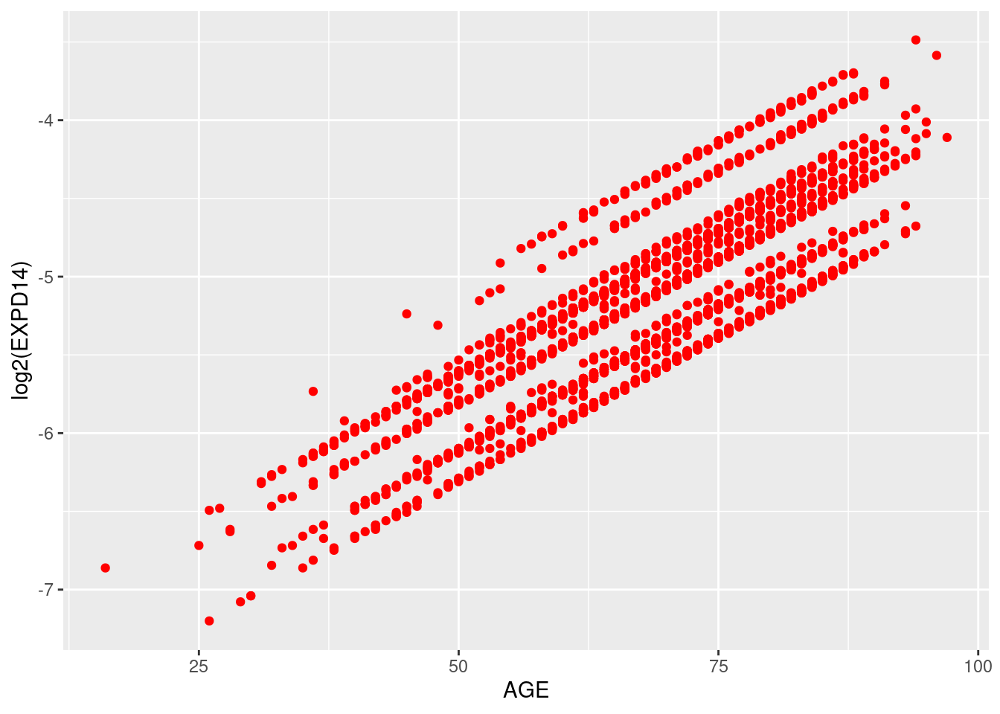
data |>
select(data_group) |>
group_by(data_group) |>
count()# A tibble: 6 × 2
# Groups: data_group [6]
data_group n
<chr> <int>
1 Asp(No)-Hep(No) 4860
2 Asp(No)-Hep(low) 2429
3 Asp(No)-Hep(med) 2426
4 Asp-Hep(No) 4858
5 Asp-Hep(low) 2432
6 Asp-Hep(med) 2430